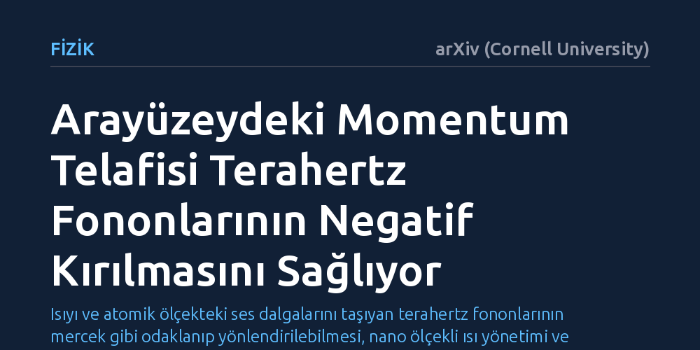

FIZIK · arXiv (Cornell University) · 2026-09-09
Araştırmacılar, dalga enerjisini yönlendirmede zorlanılan terahertz frekansındaki tutarlı fononların negatif kırılmasını sağlamak için arayüzey momentum telafisi yöntemini inceledi. Çalışma, karmaşık negatif dispersiyonlu yapılara gerek kalmadan arayüzeydeki momentum aktarımıyla fononların ters açıyla kırılabildiğini ortaya koydu.
Isıyı ve atomik ölçekteki ses dalgalarını taşıyan terahertz fononlarının mercek gibi odaklanıp yönlendirilebilmesi, nano ölçekli ısı yönetimi ve akustik aygıtlar için yeni bir kontrol mekanizması sunuyor.

Işığın veya ses dalgalarının bir ortamdan diğerine geçerken yön değiştirmesi, yani kırılma olayı, gündelik hayatta sıkça karşılaştığımız temel bir fizik kuralıdır. Bir bardağın içine konulan çay kaşığının kırık gibi görünmesi pozitif kırılmanın bir sonucudur. Ancak son yıllarda dalgaların yüzey normalinin ters tarafına büküldüğü "negatif kırılma" olgusu, enerjiyi klasik kırınım sınırlarının ötesinde odaklama ve dalgaları alışılmadık rotalara yönlendirme imkânı sunarak fizik dünyasında büyük ilgi toplamaktadır.
Optik ve makro akustik dalgalarda çeşitli metamalzemelerle başarılabilen bu tersine bükülme, katı maddelerde ısıyı ve yüksek frekanslı elastik titreşimleri taşıyan terahertz frekansındaki tutarlı fononlar için çok uzun süredir aşılamayan bir engel olarak duruyordu. Terahertz bandındaki fononlar, saniyede trilyonlarca kez titreşen ve nano ölçekteki ısı iletiminin ana yükünü taşıyan atomik titreşim paketleridir. Bu titreşimleri negatif kırılmaya zorlamak, mikroçip ve nanoaygıtlarda biriken ısıyı istenen noktalara yönlendirip soğutabilmek açısından kritik bir hedeftir.
Geleneksel olarak negatif kırılma elde etmek için malzemenin iç dispersiyon bağıntısına müdahale edilir. Bir dalganın frekansı ile momentumu arasındaki bu ilişki, ancak aşırı derecede anizotropik ya da negatif eğrilikli özel yapay yapılarla tersine çevrilebilir. Oysa terahertz frekanslarındaki uzun dalga boylu akustik fononlar, doğal katıların çoğunda standart pozitif eğriliğe sahip dispersiyon bantları sergiler.
Bu tür fononları yönlendirmek için gereken nano ölçekli karmaşık metamalzemeleri üç boyutlu olarak üretmek, atomik hassasiyet sınırları nedeniyle son derece zordur. Araştırmacılar bu sorunu çözmek için hacimsel malzemenin karmaşık iç yapısıyla uğraşmak yerine, iki farklı ortamın buluştuğu arayüzeyin sunduğu fiziksel olanaklara odaklandı. Temel soru şuydu: Fononun malzemenin içindeki dispersiyonunu zorlamadan, yalnızca sınır yüzeyindeki momentum dengesini değiştirerek negatif kırılma sağlanabilir mi?
Araştırma ekibi, iki malzeme arasındaki geçiş yüzeyinde momentumun korunumu yasasından yararlanan bir kuramsal model ve dalga mekaniği yaklaşımı geliştirdi. Bir dalga sınırdan geçerken arayüzeye paralel momentum bileşeni normalde korunur ve kırılma açısını bu süreklilik belirler. Ancak arayüzeye periyodik veya tasarlanmış bir momentum telafisi eklendiğinde, fonon yüzeyi geçerken fazladan bir arayüzey momentumu kazanır.
Yapılan simülasyon ve analizler, bu fazladan momentumun gelen fononun paralel momentumunu tersine çevirecek şekilde dengelenebildiğini gösterdi. Momentumun işareti ters döndüğünde, arayüzeyi geçen terahertz fononunun grup hızı ve enerji akışı yüzey normalinin ters tarafına doğru sapmakta, yani negatif kırılma gerçekleşmektedir. Böylece malzemenin kendi iç dispersiyonunu karmaşıklaştırmaya gerek kalmadan, yalnızca yüzeydeki momentum mühendisliğiyle negatif kırılma elde edilebilmektedir.
Elde edilen bu bulgu, katı hal fiziğinde terahertz fononlarının manipülasyonu için yeni bir kuramsal çerçeve açmaktadır. Egzotik ve üretimi son derece zor üç boyutlu metamalzemeler yerine, kontrol edilebilir arayüzey tasarımları kullanılarak yüksek frekanslı fonon demetleri yönlendirilebilir ve istenen odak noktalarında toplanabilir.
Bunun pratik yansıması, özellikle modern yarı iletken çiplerde ve nanoelektronik bileşenlerde karşılaşılan yerel aşırı ısınma sorunlarının giderilmesine katkı sağlayabilir. Fononların mercek benzeri yapılarla istenmeyen bölgelerden uzaklaştırılması veya ısı enerjisinin hedeflenen soğuruculara yönlendirilmesi, gelecekteki termal yönetim mimarilerinin önünü açabilir. Ancak bu prensibin laboratuvar ortamında nano ölçekli üretim kusurları ve arayüzey pürüzlülüğü altında nasıl davranacağının deneysel olarak test edilmesi gerekmektedir.